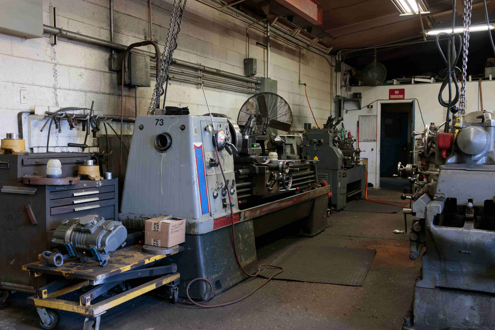
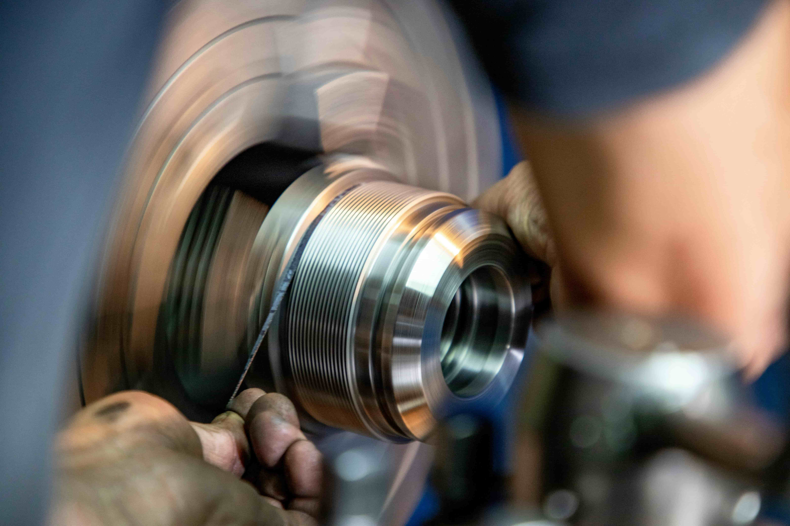
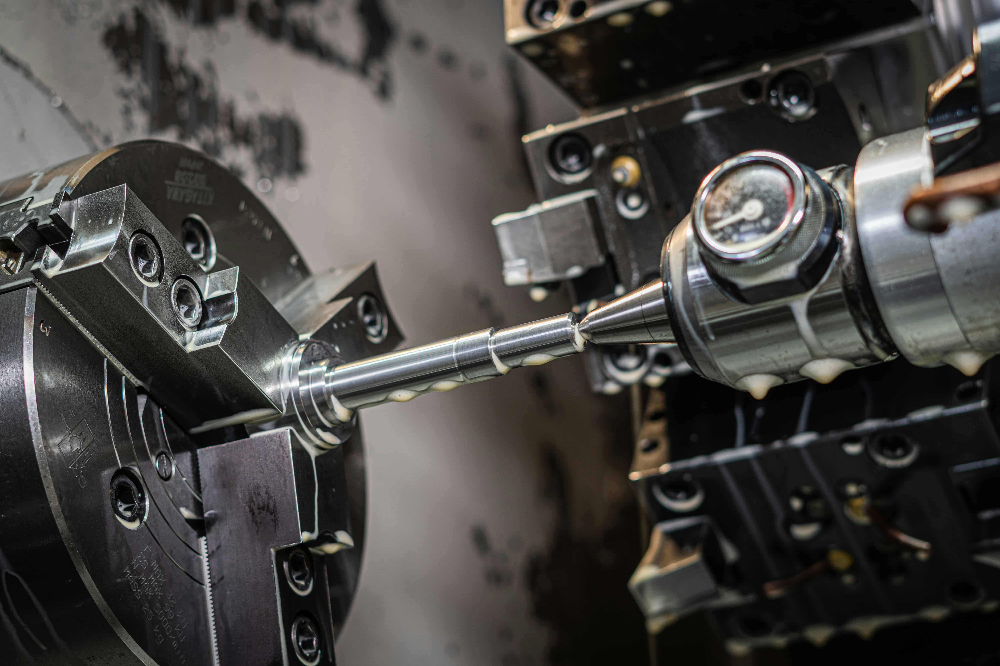
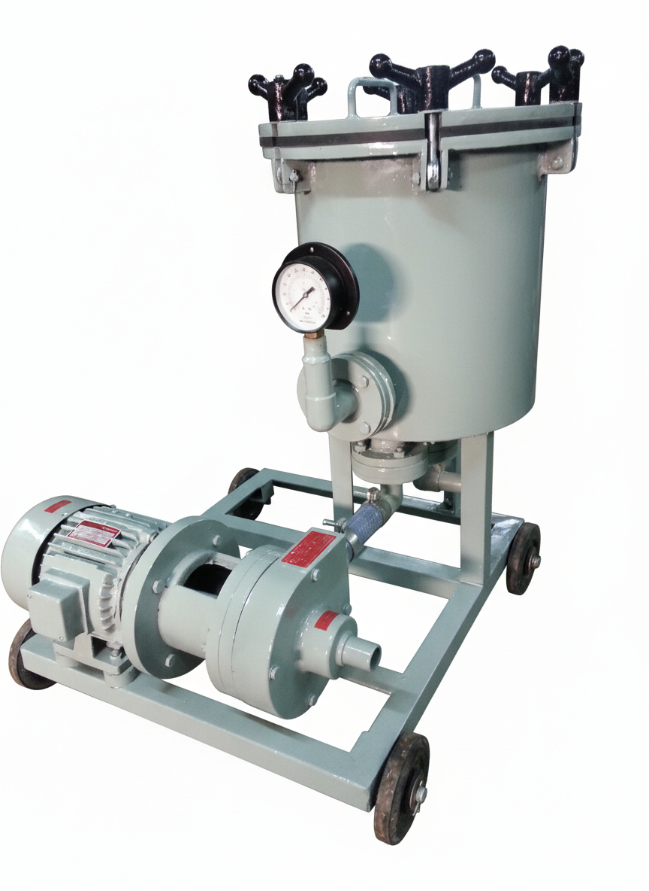

Our Work
Parts We've Made
A selection of components manufactured at Mak Manufacturers. Replace these with your actual part photos.
Built with Precision
Small batches. Tight tolerances. The jobs others turn away.



Mak Manufacturers was founded in 1973 — over five decades ago — in a time when craftsmanship and precision were not buzzwords, but a way of life. What started as a small machining operation has grown into a trusted name for clients who need parts done right, the first time.
We run a focused, hands-on operation where every project gets direct attention and care. Every part is treated with the same precision and importance, no matter the size of the order.
Bearing fits, bush sizes, and tolerance-critical parts that other shops decline to take.
Over 50 years of consistent quality, repeat clients, and a reputation built entirely on results.
From a single prototype to a small production run — we handle it with the same care.
Precision turning on CNC and conventional lathes. Cylindrical components, shafts, pins, and bearing-fit parts manufactured to exact diameters.
Flat surfaces, slots, keyways, and complex profiles. Conventional and CNC milling for components requiring precise multi-axis stock removal.
Accurate hole-making and internal bore sizing. From simple through-holes to precision bored fits for bushings, bearings, and close-tolerance assemblies.
Computer-controlled accuracy for parts that demand repeatability and tight tolerances across small batches. CNC turning handled in-house.
Structural and fabrication welding for assemblies, fixtures, and repair work. Clean welds for components requiring dimensional integrity post-joining.
Precision shaping operations for accurate material profiling and surface finishing. Machined with close attention to dimensional accuracy, consistency, and part geometry
Grinding operations for deburring, surface finishing, and final dimension correction. Essential for parts requiring a clean, precise final finish.
Custom fixtures and jigs for holding complex or irregular parts during machining. We take on jobs that require special setups others are unwilling to attempt.
For jobs that fall outside our in-house capabilities, we coordinate with a trusted network of specialists. You deal with us — we handle the rest. One point of contact, complete accountability.
Beyond custom machining, Mak Manufacturers designs and fabricates chemical filtration machinery for industrial applications. Built entirely in-house, these systems are engineered for durability, chemical compatibility, and continuous-duty operation.
Each unit is manufactured to order — sized and configured based on your process requirements.

Wherever precise parts are needed, we can deliver.
Engine components, transmission parts, brackets, shafts, and custom fittings for automotive OEMs and repair workshops.
Precision bores, cylinder components, valve bodies, and close-tolerance fittings for hydraulic systems and fluid power applications.
Corrosion-resistant components, pump parts, agitator shafts, and custom machined fittings for chemical processing environments.
One-off prototypes, replacement parts, fixtures, and any precision component requirement across industries not listed above.
We are not the biggest shop. We are the most reliable one for the jobs that matter.
Complex geometries, unusual materials, tight tolerances, awkward setups — the jobs other shops decline are the jobs we do best.
From a single prototype to a batch of 500, every order gets treated with the same seriousness. No job is too small to do properly.
Bearing fits, bush sizes, and precision bores requiring tolerances in a few microns — we have the capability and the experience to hold them consistently.
If your part needs a special setup to machine correctly, we build the fixtures ourselves. No excuses, no outsourcing the problem.
Our clients are not new. Many have been with us for decades. That kind of loyalty is earned through consistency, honesty, and results.
For work beyond our in-house scope, we coordinate with trusted partners. You speak to us once — we manage the rest.
A selection of components manufactured at Mak Manufacturers. Replace these with your actual part photos.
We believe in straightforward answers. If your question isn't here, reach out directly and we'll respond personally.
Contact UsWe specialise in small-lot work — from a single prototype to batches of approximately 50–1000 pieces depending on complexity. We do not take on very high-volume mass production jobs, as our focus is on precision and individual part quality.
We can hold tolerances in the range of a few microns for precision fits such as bearings and bushes. Our CNC lathe and skilled manual machining allow us to work to H7/g6 and similar precision fits across a range of materials.
Absolutely. Single-piece prototype jobs are something we are well-suited for. Unlike larger shops that prioritise production runs, we give the same attention to a single part as we would to a batch of 50.
We regularly work with mild steel, stainless steel, aluminium, brass, bronze, and cast iron. For speciality materials or alloys, contact us and we will confirm capability before committing.
Simply contact us via phone, WhatsApp, or email with your drawing, sketch, or a description of the part. We will review it and get back to you with a clear turnaround time and cost estimate — no obligations.
Yes. Designing and building custom fixtures and jigs for unusual or complex parts is one of our strengths. If a job needs a special holding setup, we sort that out as part of the job itself.